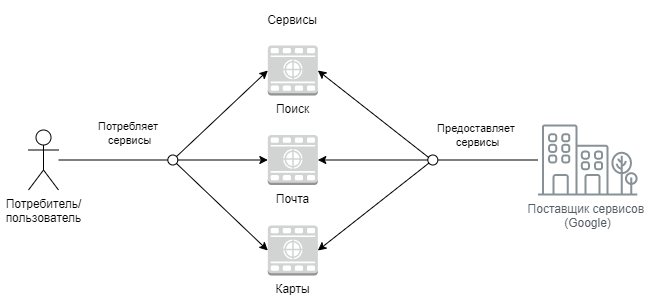
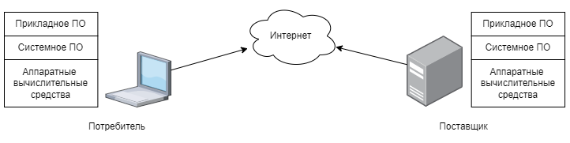

Сетевые технологии
Сетевые технологии
Сетевые технологии
Концептуальная модель взаимодействия поставщика и потребителя информационных услуг выглядит так:

Провайдер (от англ. provider — поставщик) это как правило компания (хотя может быть и частное лицо), которая поставляет информационные услуги или сервисы (от англ. service). Потребитель соответственно потребляет эти услуги.
Рассмотрим основные элементы технической реализации:

Поставщики и потребители сервисов комплекс технических средств в состав которых входят: